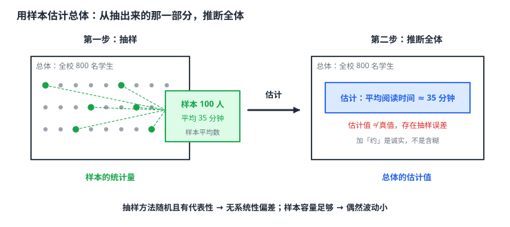

用样本估计总体
抽了 100 名学生的样本，算出平均每天阅读 35 分钟，就敢说全校学生的平均阅读时间是 35 分钟左右吗？可以——这叫用样本估计总体：用样本的统计量作为总体统计量的估计值。两条主要用法：用样本平均数估计总体的平均数，用样本频率估计总体中某类对象的比例。估计一定有误差，误差的大小主要看两点：抽样方法是否随机且有代表性（决定有没有系统性偏差），样本容量是否足够大（决定偶然波动有多大）。所以「抽样调查的结论是估计值」这句话要连着理由一起说，否则就成了为不可靠结论开脱。
| 所属主题 | 统计 |
|---|---|
| 所属模块 | 统计与概率 |
| 课标学段 | 第四学段（7~9 年级） |
| 前置知识 | 数据的收集、数据的集中趋势（平均数·中位数·众数）、数据的离散程度（方差与标准差） |
| 核心素养 | 数据观念推理能力应用意识 |
教材定位
人民教育出版社《人教版（2024版）义务教育教科书·数学》
八年级下册第24章 数据的分析24.1 数据的集中趋势24.4 数据的分组
落在八下 24.1 数据的集中趋势与 24.4 数据的分组之上。统计推断是教材未单列的内容，本篇把它定位到「用样本的集中趋势估计总体」这一教材主线之上。
说明
统计推断做的事是：用样本的统计量去估计总体对应的统计量。总体太大无法逐个调查时，这一步是必需的。估计的目标有两种：估计总体的平均数（用样本平均数），估计总体中某类对象的比例（用样本频率）。两者的算法都是一句话——样本里算出来的那个数，就是总体那个数的估计值。
估计结果与真值之间一定有差距，这个差距叫抽样误差。它有两个来源，性质完全不同：一个是系统性偏差，来自抽样方法本身有问题（挑了有偏的样本、覆盖了不该覆盖的人），这种偏差不会随样本量增大而减小，是真正危险的；另一个是偶然波动，来自抽到的这批个体与总体本来就有出入（这一届恰好偏高一点），它会随着样本容量增大而减小。前者靠「随机、有代表性的抽样」来根除，后者靠「加大样本量」来压小。
所以「样本越大估计越准」这句话要加个前提：在抽样方法正确的前提下。若抽样方法有系统性偏差，样本扩大到一千份，结论照样偏——只是偏得更精细而已。答题时若只说「样本容量要足够大」而不提抽样方法，是不完整的。
报告估计结果时，措辞很重要。应说「估计全校学生的平均阅读时间约为 35 分钟」「约有 60% 的消费者偏好该品牌」，而不说「全校学生的平均阅读时间是 35 分钟」。「约」「左右」「估计」这些词不是含糊，而是对不确定性的诚实标注；初中阶段不允许把估计值当成精确值来用。
样本容量与精度的关系是「先快后慢」：样本从 10 增到 100，偶然波动的减小幅度很明显；从 1000 增到 10000，效果就小得多。所以确定样本容量时要综合考虑精度需求与成本，不是一味求大。
使用场景
市场调研：抽取 200 名消费者，其中 120 人表示偏好某品牌，据此估计全市消费者的偏好比例约为 60%，并说明这是抽样估计值。
教学评估：抽取一个班的学生作业成绩求平均分，用来估计全年级该次作业的平均分，与全年级实际平均分对比，评估抽样带来的误差。
注意点
估计值要带「约」「左右」。题目问「估计全校学生的平均阅读时间」，答案写成「约 35 分钟」，写成「35 分钟」就是把估计当成了精确值，答题不严谨。
不能用样本的比例去估计总体的个数而不提依据。样本中某类占 60%，可以估计总体中这一类的比例；要估计「多少人」，还得先知道总体的总数——这是两个不同的问题。
样本容量不是越大越好，也不是想抽多少抽多少。样本容量受时间、经费、人力限制，也受总体规模限制（总体只有 50 人时抽 100 人就没有意义了）。
样本与总体必须「同类」。用某城市居民的样本去估计另一城市居民的情况，抽样再随机也没用——抽样框本身就选错了。
证明

图 1：从样本到总体的推断——用样本的平均数估计总体的平均数，结论是估计值，与真值之间有抽样误差
证明
结论 1样本平均数 \barx 是总体平均数 \barY 的一个估计值：抽的次数越多，\barx 越向 \barY 靠拢，但它始终只是估计值，不等于真值。
把总体的 N 个数据都看作不同的数 y_1,\ldots,y_N，总体的平均数是 \barY=\dfrac\sum y_iN。随机抽到的 n 个个体记作 x_1,\ldots,x_n，样本平均数 \barx=\dfrac\sum x_in。由于每个个体被抽中的机会均等，样本平均数是总体平均数的一个「公平抽样」的估计——抽的次数越多，\barx 越向 \barY 靠拢。这正是「样本容量大则估计稳」的数学根据。
关键一步靠的是「每个个体被抽中的机会均等」这一条：样本是总体的随机子集而不是挑出来的，所以 \barx 落在 \barY 附近，不系统性地偏向总体的某一部分，抽的次数越多就越向 \barY 靠拢。要分清的是估计值 ≠ 真值：它只是越来越接近真值，而不是等于真值。这正是「样本容量大则估计稳」的数学根据。
结论 2偶然波动随样本量增大而减小：抽 n 次得到的 n 个样本平均数构成的这一组数据，其方差只有总体的 1/n，而集中点始终是总体平均数。
设想把抽 n 次的每一次都做一遍，得到 n 个样本平均数。这 n 个平均值本身也构成一组数据，它们的平均数等于总体平均数（因为每个个体被抽中的机会均等，平均下来没有偏），而它们的方差只有总体的 1/n（这是抽样平均的方差公式）。所以 n 越大，这组「样本平均数」越集中，波动越小；而它们的集中点始终是总体平均数——估计没有偏，精度在提高。
关键一步用两个事实夹住：一是这 n 个样本平均数的平均数等于总体平均数（因为每个个体被抽中的机会均等，平均下来没有偏），二是它们的方差只有总体的 1/n（这是抽样平均的方差公式）。所以 n 越大，这组「样本平均数」越集中、波动越小，而集中点始终不动——估计没有偏，精度在提高。
结论 3系统性偏差不能靠加大样本解决：抽样方法本身有偏时，每个样本平均数都朝同一方向偏离总体平均数，且这个偏差量不随样本量增大而减小。
若抽样方法本身有偏（比如只抽住校生去估计全校学生），那么每个样本平均数都系统性地偏大，且这个偏差量不随样本量增大而减小。此时样本平均数的方差虽小，但它整体偏离了总体平均数——方差小不等于无偏。这正是「先保证抽样方法正确，再谈样本量」的理由。
关键一步两种偏差的性质完全不同：偶然波动来自抽到的这批个体与总体本来就有出入，加大样本量就能压小；系统性偏差来自抽样方法本身有问题（比如只抽住校生去估计全校学生），是每个样本平均数都朝同一个方向偏，样本量再大也压不下去。此时样本平均数的方差虽小，但它整体偏离了总体平均数——方差小不等于无偏。这正是「先保证抽样方法正确，再谈样本量」的理由。
结论 4样本频率 m/n 是总体中该特征比例 p 的估计值，理由与用样本平均数估计总体平均数完全相同。
设总体中具有某特征的比例为 p，随机抽取 n 个，样本中具有该特征的个数为 m，样本频率 m/n 是 p 的估计。理由与平均数完全相同——随机性保证没有系统性偏差，样本量保证波动小。这条在概率课里还会再出现一次，那时要说的是「用大量重复试验的频率估计概率」，两者是同一个数学思想的两种应用。
关键一步两条支撑与平均数的情形完全一致：随机性保证没有系统性偏差（抽到的个体不挑不倚），样本量保证波动小（n 越大，m/n 越接近 p）。所以样本频率可以拿来估计总体比例，但结论同样只是估计值，不等于真值。这条在概率课里还会再出现一次，那时要说的是「用大量重复试验的频率估计概率」，两者是同一个数学思想的两种应用。
动手实验
从学校食堂的取餐记录里做一个「样本估计总体」的实验：先把一天全部 600 份记录按随机方法抽出 60 份，算出这 60 份的平均消费金额；再换成抽 120 份算一次；最后把全部 600 份的真实平均金额算出来作对照。重复这个过程几次（每次重新抽），你会看到：样本平均值每次都在真值附近跳动，但抽 120 份时的跳动幅度明显小于抽 60 份时——「估计值在真值附近晃、样本越大晃得越小」就是统计推断最直观的样子。同时可以试着故意用「只抽前 60 份」来代替随机抽，看看结果会偏到哪里去，这就展示了系统性偏差与偶然波动的区别。
解题思路
用样本估计总体四步：① 确认样本与总体同类、抽样方法随机且有代表性（这一步决定结论有没有系统性偏差）；② 算出样本的统计量（平均数或频率）；③ 写出估计值，加上「约」「左右」等措辞；④ 若题目给了真实总体数据，回头对比一下，量化这次估计的误差。
估计总体中某类对象的个数：先求样本中该类的频率 p=m/n，再用 p× N（N 为总体个数）得到估计个数。注意这依赖总体总数已知，否则只能估计比例。
评价一个抽样方案好不好，看两点：抽样方法是否随机且有代表性（决定有没有偏），样本容量是否足够（决定波动大小）。答题时两点都要说到，只说一点不完整。
按场景的例题
例 1（场景：数据调查） 用样本平均数估计全校平均阅读时间
某校有 800 名学生，为了解学生的课外阅读时间，随机抽取了 100 名学生进行调查，得到他们的平均每天阅读时间为 35 分钟。请估计全校学生的平均每天阅读时间，并说明这个估计值与真实值之间可能存在什么关系。
解：用样本平均数估计总体平均数：估计全校学生平均每天阅读时间约为 35 分钟。注意这是估计值，不是精确值——样本是抽出来的 100 人，与全校 800 人在阅读习惯上可能存在出入，因此真实平均数可能略高或略低，与 35 分钟有一个差距。要缩小这个差距，可以让样本容量更大（如抽 200 人）；但前提是抽样方法随机且有代表性，否则样本再大也只是把同样的偏差放大。另外，若全校阅读时间确实为 35 分钟，那这次估计就非常准确；题目未给真实值，所以答案只能写成「约为」。
答：估计全校学生平均每天阅读时间约为 35 分钟；这是抽样估计值，与真实值之间存在抽样误差。
例 2（场景：销售与利润） 用样本频率估计市场偏好比例
某品牌新款饮料在全市随机抽取了 200 名消费者进行调查，其中 120 人表示愿意购买该品牌。据此估计全市消费者中愿意购买该品牌的比例，并估计全市 50000 名消费者中愿意购买的人数。
解：样本中愿意购买的比例（频率）为 120/200=0.6=60%。用样本频率估计总体比例：估计全市消费者中愿意购买该品牌的比例约为 60%。再估计人数：50000× 60%=30000（人），即估计约有 30000 人愿意购买。两个答案都是估计值：比例的估计可能有几个百分点的误差，人数的估计则还要叠加总体总数本身的准确性。要让估计更可靠，可以在经费允许的前提下加大抽样量。
答：购买意愿比例估计约为 60%；愿意购买的人数估计约为 30000 人。
例 3（场景：方案选择） 样本容量对估计精度的影响
某调查想估计全市初中生每天课外阅读的平均时长。甲方案抽 50 人，得到平均 32 分钟；乙方案抽 500 人，得到平均 35 分钟。已知全市真实平均为 34 分钟。哪个方案的估计更接近真实值？这说明了什么？
解：甲方案的估计值 32 分钟与真实值 34 分钟相差 2 分钟；乙方案的估计值 35 分钟与真实值相差 1 分钟，乙方案更接近真实值。这说明在抽样方法正确的前提下，样本容量越大，偶然波动越小，估计越接近总体真值。但要注意两点：① 这个结论的前提是抽样方法随机且有代表性，若抽样方法有系统性偏差，抽 5000 人照样偏；② 样本容量不是越大越好，500 人的调查成本是 50 人的十倍，精度提升却只有一倍，实际决策要在精度与成本之间取平衡。
答：乙方案更接近真实值（误差 1 分钟 vs 2 分钟）；说明抽样方法正确时样本越大估计越准，但还须兼顾成本。
常用推论
统计推断把「没法一件件都量」的困境变成了「用可量的局部换取对整体的判断」，代价是结论从「确定」变成了「估计」。接受这个代价需要两个前提：抽样方法站得住（无偏），样本容量够大（波动小）。这两个前提缺一不可，也不可互相替代——这是本节最该带走的一句话。
「样本统计量 → 总体统计量」和「重复试验的频率 → 概率」是同一条数学路径的两次应用：都是用可重复、可随机的小规模现象去推断一个不可直接观测的大规模量。前者推断的是数量（平均数、比例），后者推断的是概率。理解了这一层，统计与概率在初中阶段就是一件事的两面。
报告估计结果时加上「约」不只是谨慎，更是责任：把估计值说成精确值，会让决策者误以为没有不确定性，从而在误差面前措手不及。统计素养的一部分，就是让不确定性在结论里被看见。
易错点
错「随机抽取 100 名学生调查，样本平均阅读时间 35 分钟，所以全校学生的平均阅读时间就是 35 分钟。」
为什么错把估计值当成了精确值。样本只是总体的一部分，样本平均数与总体平均数之间必然存在抽样误差，结论只能是估计值。
正确「估计全校学生的平均阅读时间约为 35 分钟」，并说明抽样方法随机、样本容量 100，估计值与真值之间存在抽样误差。
错「样本容量越大，抽样调查的结论就越准确。」
为什么错漏了前提。样本量只能压小偶然波动，对系统性偏差毫无作用——若抽样方法本身有偏（只抽某类人、只问某时段的人），抽一万份照样偏。
正确先保证抽样方法随机且有代表性，再谈样本容量；两者都要有，缺一不可。
错「样本中 60% 的消费者说愿意购买，所以全市有 60% 的消费者愿意购买，这批人有 30000 人。」
为什么错前一句该加「估计」（抽样频率只是总体频率的估计），后一句还多了一步：人数估计依赖总体总数 50000 已知，而这个前提在句子里没有交代，读者看不出这 30000 是怎么来的。
正确分两步说清：「估计购买意愿比例约为 60%」；「若全市有 50000 名消费者，则估计愿意购买者约为 50000×60%=30000 人」。
直观理解
抽样估计像用一小勺汤尝出整锅咸淡——结论的可信度来自两件事：这一勺是不是从锅里随机舀的（方法对不对），以及这一勺够不够舀（样本够不够大）。舀得不随机，尝得再准也是尝错了那一块；舀得太少，咸淡总是晃悠。统计学家做的事，就是把这两件事拆开来量化，然后告诉你这个估计大概偏多少、晃多大（图 1）。学会用「估计值 + 误差来源」的方式说结论，就是统计素养的起点。